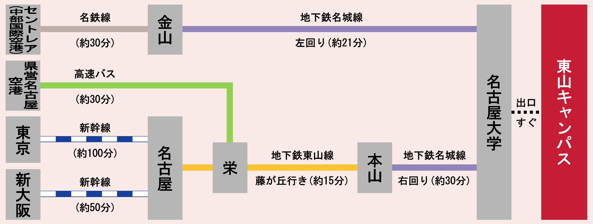
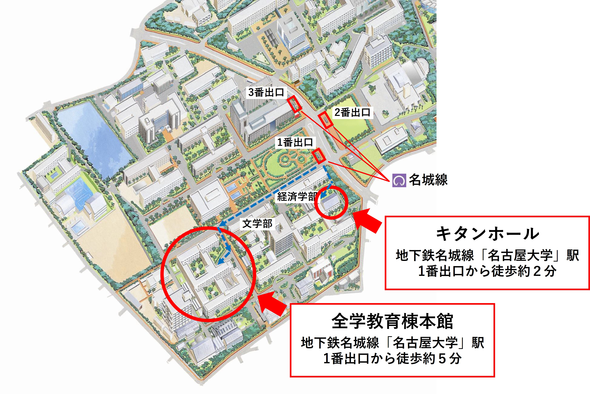

日本進化学会第28回大会
進化から学ぶ生命科学 ～ 分子・ゲノムから集団・生態系まで
2026年8月19日(水)～22日(土)
会 場 名古屋大学 全学教育棟，キタンホール
大会長 隅山 健太 （名古屋大学）
日本進化学会第28回大会
大会長挨拶
第28回日本進化学会年次大会を、2026年8月19日より4日間、名古屋大学にて開催いたします。本大会は、「進化から学ぶ生命科学 ～ 分子・ゲノムから集団・生態系まで」をテーマに掲げ、進化生物学の多層的な広がりと、その学際的な可能性を改めて見つめ直す場として企画いたしました。
進化学は、生物の多様性を理解するための基盤であると同時に、分子レベルのメカニズムから個体・集団・生態系に至るまで、生命科学のあらゆる階層を貫く統合原理でもあります。本大会では、招待講演やシンポジウム、一般講演・ポスター発表に加え、高校生によるポスター発表や市民公開講座、夏の学校など、多様な企画を通じて、専門分野や世代を超えた活発な議論と交流の場を創出します。研究者のみならず、学生、教育関係者、そして一般の皆様にとっても、進化学の魅力と最前線に触れる貴重な機会となることを期待しております。会場内には託児所が設けられ、お子様連れの方も安心して参加いただけます。
開催地である名古屋市は、日本のほぼ中央に位置する交通至便な都市であり、学術・産業の集積地としても知られています。この地での進化学会大会開催は初の試みであり、新たな分野横断的連携や共同研究の芽を育む絶好の機会となるでしょう。実行委員一同、多数の皆様のご参加を心よりお待ち申し上げます。
第28回日本進化学会大会長 隅山 健太（名古屋大学）
開催概要
大会名 日本進化学会第28回大会
大会長 隅山 健太（名古屋大学）
大会テーマ 進化から学ぶ生命科学 ～ 分子・ゲノムから集団・生態系まで
会期 2026年8月19日～21日（本大会）
2026年8月22日（夏の学校・市民公開講座）
会場 名古屋大学 全学教育棟, キタンホール
主催 
共催 

大会実行委員会
大会長・大会実行委員長
隅山 健太 （名古屋大学）
大会実行委員
一柳 健司 （名古屋大学）
嶋田 誠 （藤田医科大学）
鈴木 善幸 （名古屋市立大学）
熊澤 慶伯 （名古屋市立大学）
今井 啓雄 （京都大学）
桂 有加子 （京都大学）
石川 由希 （筑波大学・名古屋大学）
岡田 泰和 （名古屋大学）
田中 良弥 （名古屋大学）
太田 元規 （名古屋大学）
田邉 彰 （名古屋大学）
飯田 敦夫 （名古屋大学）
重信 秀司 （基礎生物学研究所）
松村 秀一 （岐阜大学）
中川 草 （東海大学・アドバイザー）
アクセス
名古屋大学 東山キャンパス 全学教育棟 / キタンホール
〒464-8601 愛知県名古屋市千種区不老町
参加受付時間
決まり次第お知らせします
名古屋大学までの行き方

空港をご利用の場合
①中部国際空港⇔名古屋大学（タクシー 約50分、鉄道 約60分）
②県営名古屋空港⇔名古屋大学（タクシー 約45分、公共交通 約60分）
名古屋駅をご利用の場合
①タクシーをご利用（約25分）
②地下鉄をご利用（約25分）
③路線バスをご利用（約55分）
校内マップ
